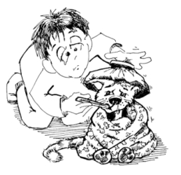
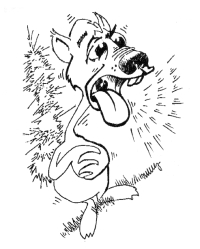

This page has usage examples for the following words:
a cold 風邪 かぜ
attending physician, family doctor 主治医 しゅじい
chill 寒気・悪寒 さむけ・おかん
clinical history 病歴 びょうれき
diagnosis 診断 しんだん
fever, temperature 熱 ねつ
general weakness 倦怠感 けんたいかん
injection 注射 ちゅうしゃ
joint ache, arthralgia 関節痛 かんせつつう
medical record 診察記録 しんさつきろく
medical examination 診察 しんさつ
preventive injection 予防注射 よぼうちゅうしゃ(インフルエンザの場合 flu shot )
runny nose 鼻水 はなみず
sneeze くしゃみ
stuffy nose 鼻づまり はなづまり
 I feel weak.
ちょっと身体がだるいんです。
ちょっと からだがだるいんです。
I may be coming down with a cold.
風邪のひきはじめのようなんですが・・・
かぜのひきはじめのようなんですが・・・
I stayed home for the past two days.
２日間、家で寝ていました。
ふつかかん、いえでねていました。
I still feel weak, but it is not too bad・・・
まだ倦怠感がとれませんが、症状は軽いです。
まだけんたいかんがとれませんが、しょうじょうはかるいです。
I may have a fever. I don't think it is high.
微熱があるかもしれませんが、そんなに高くないと思います。
びねつがあるかもしれませんが、そんなにたかくないとおもいます。
I sneeze and cough and have a runny nose in the morning and night.
朝と夜に、くしゃみ、咳、鼻水が出ます。
あさとよるに、くしゃみ、せき、はなみずがでます。
I don't have these symptoms during the day.
日中はこのような症状もなく元気にしています。
にっちゅうは このようなしょうじょうもなく げんきにしています。
Otherwise, I don't have a headache or cough, but I just don't want it to drag on.
他に頭痛や咳もないので大したことないのですが、長引かせたくないものですから。
ほかに ずつうやせきもないので たいしたことないのですが、ながびかせたくないものですから。
I thought it was a cold, but it has been 3 weeks and I can't shake off the cough.
風邪かと思っていましたが、咳が３週間もとれません。
かぜかとおもっていましたが、せきが ３しゅうかんも とれません。
I start coughing when the weather changes or when I step into cold air.
気候の変化や冷気に当たると咳込みます。
きこうのへんかや れいきにあたると せきこみます。

A conversation between a patient and a doctor about a cold
Patient:
Colds are going around. I don’t go and see my doctor if symptoms are those of the early stages. The symptoms sometimes progress while I am unaware. It has been said from old times that a cold is the source of ten-thousand diseases. Why is that? It would be ideal if one can have a family doctor to consult when one can’t determine whether or not to see a doctor!
風邪がはやっていますが、「風邪のひきはじめかな」という程度の自覚症状では、すぐにお医者さんに行かず、そのうちに症状がすすんでいたということもあります。昔から「風邪は万病のもと」と言われていますが、それはどうしてですか？ また、「風邪くらい・・」「この程度ならまだ受診の必要はないのでは・・」と判断に迷う時に、安心して相談出来る家庭医を持っていると心強いですね。
Doctor:
The reasons why it is said that a cold is the source of ten-thousand diseases are 1) thinking that it is just a cold, you neglect to be careful, exhausting the defense mechanisms of the body, resulting in a more serious condition, and 2) runny nose and cough which appear to be the beginning of a cold, can, in fact, be the start of other serious diseases. When you have cold symptoms (runny nose and cough), be sure to have good rest. If you feel there is something different from usual colds, you should consult your doctor.
「風邪は万病のもと」といわれているのは、一つには、「風邪くらいなら」と用心を怠り、無理を重ねて、身体に備わっている防御機構だけでは防ぎきれなくて重病化する場合、もう一つには、鼻水やせきで始まるのが風邪（上気道感染）だけでなく、他のより重大な疾患である場合があるからでしょう。いわゆる、風邪かな、と思われる症状（鼻水やのどの痛み）が出たら、危険信号の現れとみて、充分休養をとると共に、ご自分の経験に照らして、これまでの風邪と違うなと感じられたら、家庭医（いきつけの医師）の診察を受けられることをおすすめします。
My two cents 一言おせっかい
A cold is the source of ten-thousand diseases.
風邪は万病のもと
[ka01]
| © 1995-2013 NACOS International Institute. All Rights Reserved. |